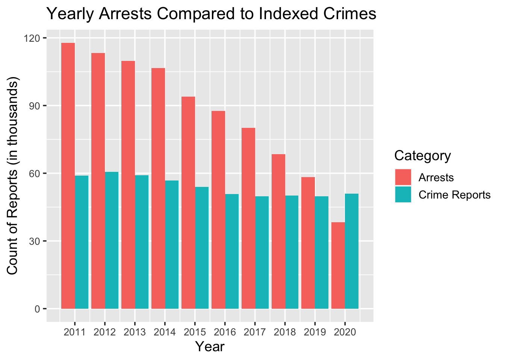
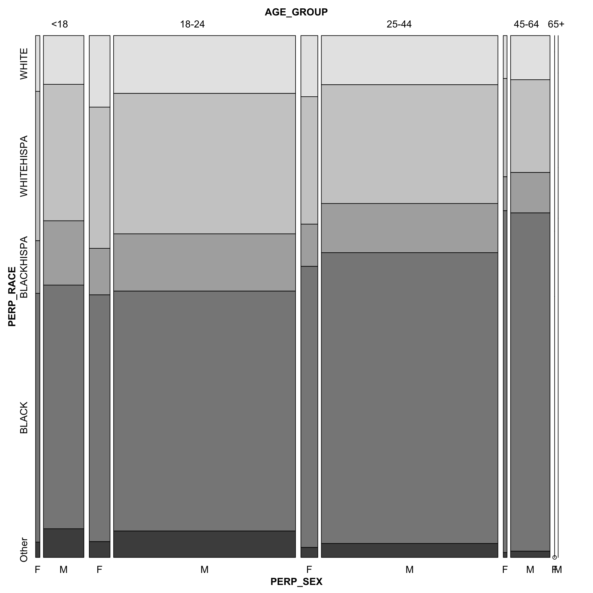
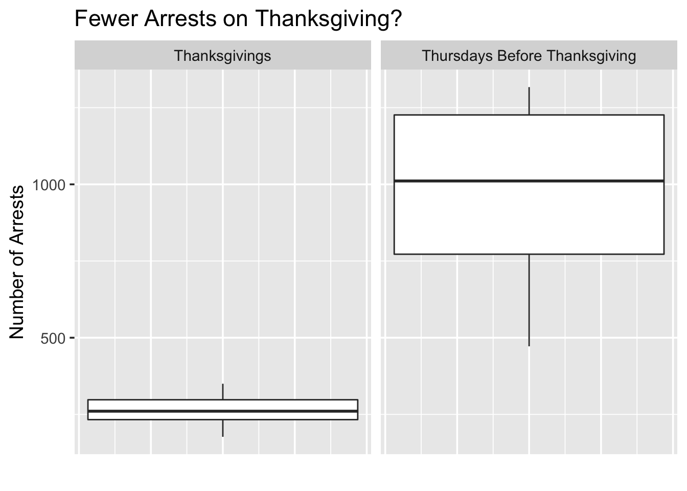
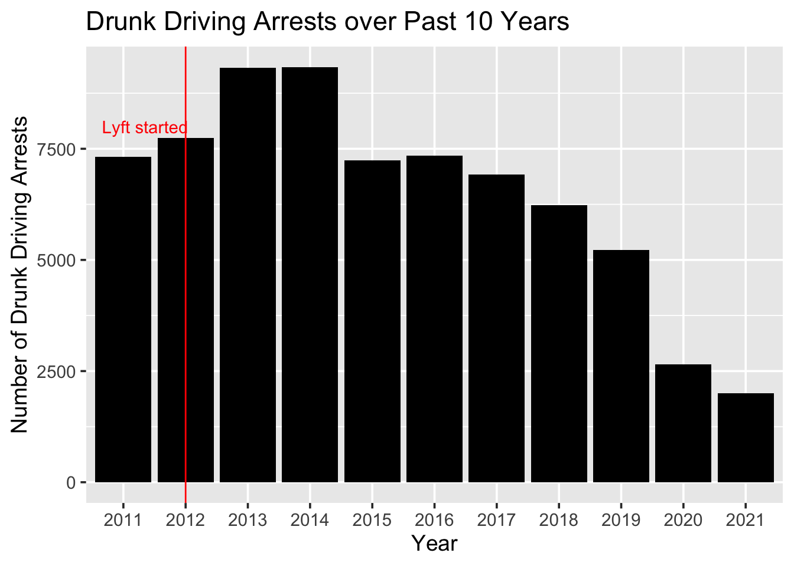
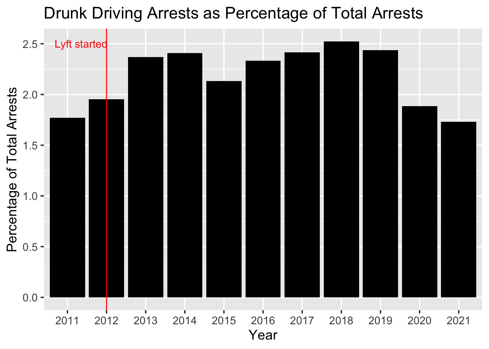

Chapter 5 Results
5.1 Initial Exploration
In this section, we will be sharing the results of exploratory analysis with our data. We will be focusing on the findings that we found most interesting during this process while also trying to provide some insight into some of the questions of interest mentioned at the beginning of this project. To start, we made some basic bar charts to get a better understanding of the arrests occurring in New York City. First, we looked at how the number of arrests has changed over the past 10 years.

From the plot above, we can see that the number of arrests has decreased each year for the past 10 years. The decrease in arrests is very significant as well since there were over 400,000 arrests in 2011 while there were under 150,000 arrests in 2020 and just over 100,000 arrests so far in 2021. It seems likely that the impact of COVID-19 has helped decrease the number of arrests in 2020 and 2021, especially in 2020 with so many things being shutdown. It will be interesting to see if the number of arrests in 2021 is larger than the 2020 which would be a deviation from the trend of arrests going down. While this plot indicates progress in terms of safety in New York, it will be interesting to see if the number of crimes has dropped significantly as well. If arrests are going down, but crimes are not, then this would indicate that the city is not actually safer, but instead people are getting away with more crimes. We were also interested in looking at the distribution of arrests by month to see if this varied throughout the year. From the plot below, we see that there doesn’t seem to be significant variation from month to month in terms of arrests over the past 10 years.

One small pattern that we can see from this plot is that the number of arrests seems to drop off a little in December, with December 2014 being the most extreme example. The reasoning for this drop off is unclear, but it could potentially be related to the holiday season. It will be interesting to compare to the number of crimes in December to see if people commit fewer crimes at the end of the year. Another aspect of this plot that we found interesting is that the number of arrests really drops off in 2020 once COVID hit. April, June, and July all had very low arrest totals and this was likely due to the fact that most people were quarantining and not going out much.
We also wanted to look at individual days to see if there may be a reason certain days had such levels of crime. We created a Cleveland dot plot to look at the 30 days with the highest arrest totals in the past 10 years.

From the plot above, we see that the most arrests in one day over the past 10 years was 1750 on March 7th, 2012. There doesn’t seem to be anything in particular that explains why there were so many arrests on this day since it was a seemingly ordinary Wednesday in March. This was one of two days with more than 1700 arrests, with the other being February 1st, 2012 which also happened to be a Wednesday. It is also interesting to see that all of these days were either in 2011, 2012, or 2013. This makes sense given what the bar plot above showed us in terms of arrests by year, but it is still interesting to see that there were no days recently that made it in the top 30. When looking at the days on this list, we also noticed that most of these days occurred earlier in the year. Only one of the 30 days occurred in the second half of the year which seems a bit odd considering that there wasn’t a huge difference between the number of arrests by month. It would be interesting to see if this pattern continued for the top 50 or 100 days in terms of most arrests, and if there is a potential explanation for why this is the case. Another interesting point is the weekdays on which the most arrests occurred. As we can see, all of the top days were Wednesdays, Thursdays, and Fridays. It may be argued that Weekends typically see less activity, as they may see fewer people commuting into the city. It is quite curious, though, that Mondays and Tuesdays are under-represented.
We also want to look at the types of arrests that are occurring in New York City. The three types of arrests according to the data dictionary are felonies, misdemeanors, and violations. A bar plot showing how common each arrest type has been over the past 10 years is below.

From the bar plot above, we can see that misdemeanor is the most common type of arrest in our dataset with over 2 million arrests that were related to misdemeanor charges. Felony is the next most common type of arrest with just under 1 million arrests while violations only account for around 200,000 arrests. There is also a small portion of arrests classified as I, which denotes infractions. There were also a small amount of arrests that did not have a LAW_CAT_CD, so these were categorized as NA in our plot.
Next, we made a parallel coordinates plot to get a better understanding of the arrests made in each borough. We categorized the types of arrests into five categories: Murder, Rape, Aggravated Assault, Motor Vehicle Theft, and Robbery.

From the parallel coordinates plot, Richmond County (Staten Island) has had the fewest number of arrests in all of these categories over the past 10 years. This is not surprising since Staten Island is the least populated of the five boroughs. The Bronx has had the most arrests related to murder with over 3500 in the past 10 years, but did not have the most arrests in any of the other four categories. Kings County (Brooklyn) had the most arrests related to rape, aggravated assault, motor vehicle theft, and robbery since 2011. While Kings County had the most arrests in all of these categories, the number of arrests varied significantly. Aggravated assault had almost 50,000 arrests and robbery had around 35,000 while there were just over 5000 arrests for rape and 3500 for motor vehicle theft. Queens County did not have the most or fewest arrests in any category, but almost had as many motor vehicle thefts as Kings County. Finally, New York County had the second fewest arrests for murder, rape, aggravated assault, and motor vehicle theft.
5.2 Arrests Compared to Crime
Earlier in this analysis, we mentioned how arrests can be considered a proxy for crime, but that this equivalence is not perfect. To begin, we will put this assumption to the test by comparing our data on arrests in New York City to our data on reported NYC crime. In the below visuals, we see reported crimes of several categories, paired with their associated arrests. We first look at general crime aggregates, compared to arrests.

This reveals a concerning discrepancy. According to our crime reports, indexed crimes have remained stable over the past 10 years. Arrests, however, have decreased steadily over time! This would suggest that police have been making fewer arrests, relative to crime. Many media sources (Ex: https://www.usatoday.com/story/opinion/policing/2021/04/09/violent-crime-surged-across-america-after-police-retreated-column/7137565002/), have suggested this decrease can be attributed to increased police caution following the highly publicized killings of several Black men, starting in 2013, and the rise of the Black Lives Matter Movement. Notably, one of these killings, the 2014 killing of Eric Garner, was the result of NYPD action. Going further, it seems that there were changes in police policy after what seemed to be a retaliatory attack against the NYPD in December of 2014 (https://nypost.com/2014/12/29/arrests-plummet-following-execution-of-two-cops/). It is hard to gauge whether this decline can be solely attributed to this increased police caution, or if part of the decline in arrests was due to an ongoing pattern that extends further back in time. Regardless, it seems apparent that arrests have declined steadily over time, while the crimes included in the UCR’s crime index have remained relatively steady.
We have established that crimes and arrests are not equivalent, but how large is the discrepancy for individual categories of crime, and are these discrepancies consistent across boroughs? In the below visual, columns are grouped by their year and associated county (NY for New York, Kn for Kings, Rc for Richmond, Br for Brooklyn, and Qn for Queens).
There are some very interesting things to be observed here. First, arrests do not map exactly to reported crimes. Aggravated Assault, Murder, and Motor Vehicle Theft all present cases where the number of arrests does not exactly match the associated number of crimes reported. Rape seems the exception, with arrest counts closer to crime reports. Next, it is interesting to note that the degree to which arrests differ from crime reports, and the direction of the mismatch, varies. In the case of motor vehicle theft, crime reports outpace arrests by a large degree. This makes sense, considering that many motor vehicle thefts occur when the vehicle owner is not present. Since motor vehicle theft often has the criminal and the victim at different locations during the time of the crime, it is reasonable that it may be harder to make an arrest after the crime, since fewer details may be known about the criminal. One confusing relation is the relation between murder arrests and reports. It seems counter-intuitive that the number of arrests made would exceed the number of murders committed. Perhaps this can be attributed to arrests made before the actual criminal was determined. Once again, we have a case where the victim cannot report effectively regarding details of the criminal, but with a crime considered to be more severe. In general, however, arrests seem to exhibit values similar to crime reports. One of the primary lessons from this visual is the understanding that arrest data can serve as a proxy for crime data, but should be recognized as a different metric, and prone to distortion.
5.3 Arrests Related to Marijuana over time
Since 2011, there have been several changes in the legal status of marijuana in New York City, and it is now legalized in the city as of 2021. Prior to this, however, there were many legal events that softened or removed penalties on marijuana-related offenses. Among them are these events:
- November 19th, 2014: Mayor de Blasio launches a policy initiative related to marijuana possession. Under this initiative, individuals in possession of 25 or fewer grams of marijuana are fined, rather than arrested. (https://nypost.com/2014/11/10/nyc-may-stop-making-arrests-for-small-amounts-of-marijuana/)
- July 31st, 2018: The Manhattan District Attorney ends the prosecution of marijuana possession and smoking. (https://www.manhattanda.org/tomorrow-d-a-vance-ends-prosecution-of-marijuana-possession-and-smoking-cases/)
- September 1st, 2018: The NYPD ceases arrests of individuals smoking marijuana, opting instead to issue summonses instead. (https://www.ny1.com/nyc/all-boroughs/news/2018/09/01/nypd-marijuana-enforcement-relaxation-policy-takes-effect-most-marijuana-smokers-to-get-summonses)
- July 29th, 2019: Governor Cuomo signs legislation reducing penalties for marijuana (https://www.forbes.com/sites/lisettevoytko/2019/07/29/new-york-decriminalizes-recreational-marijuana-falls-short-of-governors-goal-to-legalize/?sh=165b0ab4ee70)
- March 31, 2021: Marijuana is legalized in New York State (https://cannabis.ny.gov/marihuana-regulation-and-taxation-act-mrta)
Below is a time series graph depicting marijuana-related arrests, annotated with these events.

There are some very interesting observations here. As can be observed, there was a tremendous drop in marijuana arrests after the launch of Mayor de Blasio’s November 19th, 2014 policy initiative. However, this short-term decrease did not last. Though marijuana arrests show a marked decrease after the initiative as compared to before, arrests did see a rebound in 2015. The next largest decline appears to begin around January 2018, though the cause of this decline is not immediately obvious. It may be linked to a more widespread acceptance of marijuana that year, as evident in the commissioning of a study on the legalization of marijuana commissioned by Governor Cuomo that January (https://www.nysenate.gov/newsroom/press-releases/jamaal-t-bailey/marijuana-legalization-impact-assessment-study). Further developments later that year solidify this direction, such as the aforementioned end of prosecution in several boroughs, and the end of arrests for smoking. Unlike the previous decline, this second drop in arrests would not see a rebound, and arrests end entirely after the March 31st, 2021 legalization. The reasons for earlier declines in 2011 and 2012 are not as easy to explain, but it should be noted that 2011 was a high point in marijuana arrests. (https://gothamist.com/news/nyc-still-marijuana-arrest-capital-of-the-world-arrests-rose-again-last-year)
While marijuana was still illegal, and the cause of many arrests, many critics of marijuana laws claimed that one of the main victims of these laws were young men of color, who were arrested and often jailed at higher rates as a consequence of these laws. Is this actually the case? Below is a visual that looks at data from 2011-2013 (inclusive), before any major policy actions we have discussed.

This graph yields a very interesting result. Though it seems apparent that young, non-white people are the demographic with the most marijuana arrests, as was contended in the past, it would seem that the ratio of white to non-white arrests is more skewed with older, rather than younger individuals. That is, though people of color under 44 represent the largest group of marijuana arrests, older individuals arrested for marijuana offenses tended to be more non-white, relative to the ratio seen with younger arrests. This pattern seems to present itself most prominently among Black individuals. We can confirm that this distortion is present through a Chi-Squared test.
Chi_mj_arrests_mosaic <- {
nyc_mj_arrests_mosaic %>%
group_by(AGE_GROUP, PERP_RACE) %>%
summarize(Freq = sum(Freq)) %>%
pivot_wider(names_from = 'PERP_RACE', values_from = 'Freq')
}
rownames(Chi_mj_arrests_mosaic) <- Chi_mj_arrests_mosaic$AGE_GROUP
Mat_mj_arrests_mosaic <- as.matrix(Chi_mj_arrests_mosaic[2:6])
chi_results <-chisq.test(Mat_mj_arrests_mosaic, correct = FALSE)
chi_results##
## Pearson's Chi-squared test
##
## data: Mat_mj_arrests_mosaic
## X-squared = 2606.6, df = 16, p-value < 2.2e-16The exact reason this pattern is present seems an interesting avenue for speculation, as it seems difficult to reason why older people of color, especially Black individuals, would be more likely to be arrested for marijuana crimes, relative to younger people of color.
5.4 Arrests near Elections
We also want to look to see if the number of arrests typically changes around elections. The three Presidential elections in the past 10 years occurred on November 3rd, 2020, November 8th, 2016, and November 6th, 2012. First, we are going to look at the number of arrests on these days compared to the average number of arrests per day in each of these respective years.
| Arrest Year | Average Number of Arrests per day |
|---|---|
| 2012 | 1082.73 |
| 2016 | 860.28 |
| 2020 | 383.64 |
| Arrest Date | Number of Arrests |
|---|---|
| 2012-11-03 | 479 |
| 2016-11-08 | 734 |
| 2020-11-06 | 384 |
When looking at the number of arrests on Presidential election days, the number of arrests on the 2012 election day was much lower than the average day that year. The average number of arrests on a day in 2012 was 1082.7, but only 479 arrests occurred on November 6th, 2012. In 2016, the average number of arrests was 860.3, but only 734 occurred on election day in 2016. This is not as a large of a drop in 2012, but it still is lower than the average day. This trend did not hold in 2020 as the average number of arrests was 383.6, and 384 arrests occurred on November 3rd, 2020.
| Arrest Date | Number of Arrests |
|---|---|
| 2012-11-04 | 439 |
| 2016-11-09 | 868 |
| 2020-11-07 | 364 |
Not only do we want to look at the arrests on election day, but we also wanted to look at the day after the election. We want to see if the results of the election potentially lead to more arrests the next day. On November 4th 2012, 439 arrests occurred which is even fewer than the 479 that occurred on election day, and again well below the average for the year. In 2016, 868 arrests happened the day after the election, which was just barely above the daily average of 860.3 in that year. Finally, on November 8th 2020, 364 arrests were made which was slightly below the average of 383.6 arrests. There does not seem to be a major pattern in terms of arrest during election periods. It was interesting to see that the number of arrests was well below average in 2012 during these election days, but this pattern didn’t seem to hold in 2016 and 2020.
5.5 Thanksgiving Day Parade - More arrests, or fewer?
Many of the events discussed so far have been fairly prominent occurrences, with the ability to affect arrest rates over long periods of time. However, these are not the only events that occur in New York City. Many of these other events are smaller in scope, and less historical, but do provide another interesting perspective on how circumstance can impact numbers of arrests. Let us consider NYC’s annual Thanksgiving Day parade. This annual event sees thousands of residents and tourists gather to spectate a common experience. Along with these throngs come an increased police presence, and possible opportunities for criminals. The question remains then, how does the Thanksgiving Thursday compare to any other November Thursday? See below a map of thefts in New York City on Thanksgiving Day (on the left), and the Thursdays prior (on the right) with the parade route shown in blue.

The results are somewhat unexpected. It may seem intuitive to suspect elevated levels of crime, and therefore arrests around the parade route, but this does not seem to be the case. Many of the areas on the parade route, in fact, see little to no arrests the day of the parade! In fact, it appears that arrests in general are significantly lower on Thanksgiving day compared to the Thursday prior. If more evidence was needed, look at the following box plot, which compares the numbers of arrests on Thanksgiving days, compared to the Thursday prior.

5.6 Have Drunk Driving Arrests Gone Down Recently
Our next exploration is looking at arrests related to drunk driving. We wanted to see if the creation of apps like Uber and Lyft has helped limit the number of drunk driving arrests. To do this, we looked at the number of drunk driving arrests in each of the past 10 years.

From the plot above, we can see an interesting trend in terms of drunk driving arrests over the past 10 years. There is a clear increase in arrests during 2013 and 2014 related to drunk driving before it drops off in subsequent years. There is a sharp drop in number of arrests in 2020 and so far in 2021 which is likely due to the pandemic. As noted on the plot, Lyft was started in 2012 while Uber was created in 2009. These apps didn’t seem to have much impact on drunk driving arrests initially, but could have had some impact once they got larger and became more well-known. There has been a progressive decrease in drunk driving arrests since 2015/2016 which is likely due to a combination of the growth of these apps as well as more awareness towards drunk driving. Even if the reasoning for the drop off is not completely clear, it is a good sign that the number of drunk driving arrests has gone down in recent years.